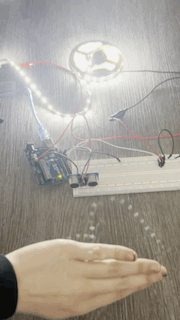
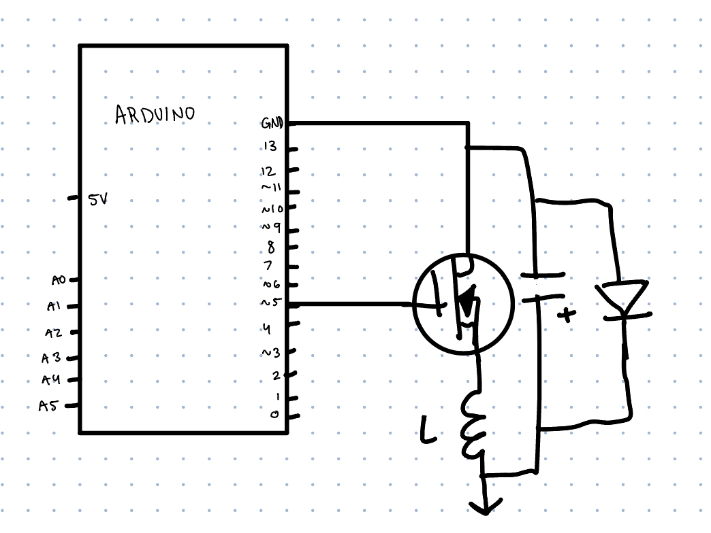
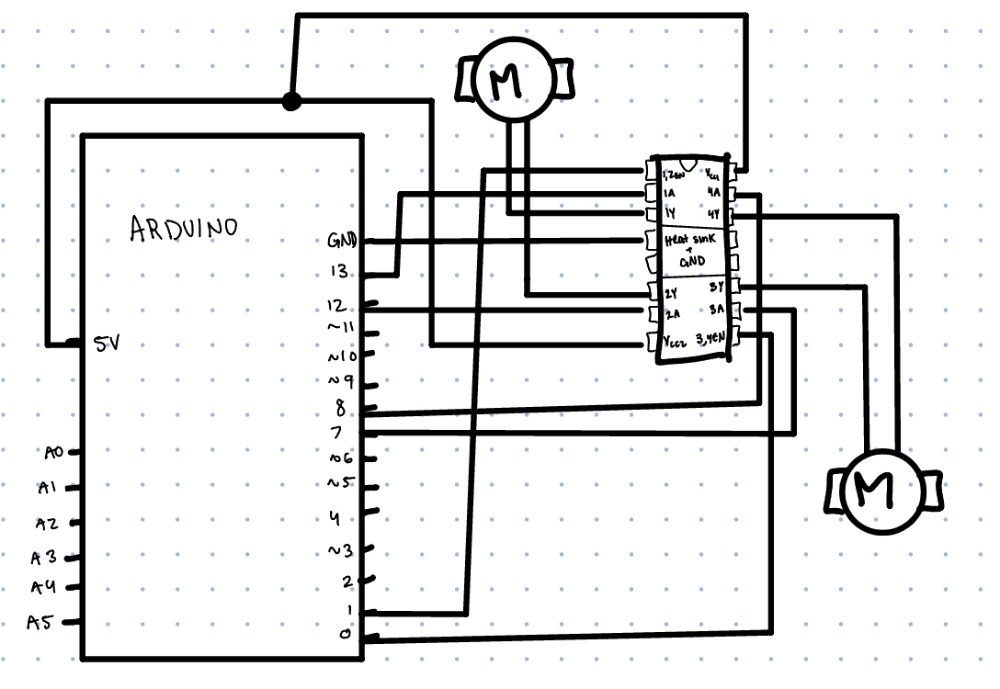

This circuit makes a string of led lights change brightness depending on how far away from the ultasonic sensor you are!
Some of the firmware is code from the ultrasonic sensor arduino sample by Tom Igoe: https://www.arduino.cc/en/Tutorial/BuiltInExamples/Ping. I have noted where this is the case
To help with this project I used notes from in class and from arduino ultrasonic sensor basics!
GIF:

//pin number of the sensor's output
const int trigPin = 13;
//pin number of sensor input
const int echoPin = 11;
// led lights pin
const int lights = 9;
void setup() {
// lights are an output but are initially off
pinMode(lights, OUTPUT);
//sensor trigger is an output, initially off
pinMode(trigPin, OUTPUT);
// sensor echo is an input, initially off
pinMode(echoPin, INPUT);
}
void loop() {
/* from here to the end of this little section is example code
I changed it to work with a four pronged sensor rather than 3, I also changed some of the documenting comments*/
// establish variables for duration of the ping, and the distance result
// in inches and centimeters:
long duration, inches, cm;
// short LOW pulse beforehand to ensure a clean HIGH pulse
digitalWrite(trigPin, LOW);
// delays for 2 microseconds
delayMicroseconds(2);
// sensor sends of a sonic pulse
digitalWrite(trigPin, HIGH);
// delays for 5 microseconds
delayMicroseconds(5);
// stops high pulse
digitalWrite(trigPin, LOW);
// sensor recieves time it takes for an echo of pulse off an object
duration = pulseIn(echoPin, HIGH);
// convert the time into a distance
inches = microsecondsToInches(duration);
/* end of example code based section */
// if the object distance is less than ten inches away from the sensor then...
if (inches < 10) {
// map the number of inches from 0 to 255
int brightness = map(inches, 10, 0, 0, 255);
// constrain the number so that it cannot be greater than 255 or less than 0
brightness = constrain(brightness, 0, 255);
// write that lights to be at that brightness
analogWrite(lights, brightness);
// if the object is greater than 10 inches away
} else {
// turn the lights off
analogWrite(lights, 0);
}
// delay for 0.1 seconds
delay(100);
}
// converts microseconds to inches (from example code)
long microsecondsToInches(long microseconds) {
// According to Parallax's datasheet for the PING, there are 73.746
// microseconds per inch (i.e. sound travels at 1130 feet per second).
// This gives the distance travelled by the ping, outbound and return,
// so we divide by 2 to get the distance of the obstacle.
// See: https://www.parallax.com/package/ping-ultrasonic-distance-sensor-downloads/
return microseconds / 74 / 2;
}
1. What is the absolute maximum amount of current between pins 2 and 3 (of the N-MOSFET Transistor in the data sheet)?
19.8 A, the avalanche max current
2. Draw a schematic for a circuit with using at least your arduino, a DC motor, a flyback diode, and capacitors between power and ground. Find parts with datasheets you could use for each of these schematic components.
3. Draw a schematic using at least your arduino, this chip, and two motors. Write (pseudo) code that shows how you would move the motors both forward, both back, then one forward one back, and one back then forward.

setup
pinmode 0 Output
pinmode 1 Output
pinmode 13 Output
pinmode 12 Output
pinmode 8 Output
pinmode 7 Output
loop
digitalwrite 1 high
digitalwrite 0 high
digitalwrite 13 high
digitalwrite 8 high
delay 4000
digitalwrite 13 low
digitalwrite 8 low
digitalwrite 12 high
digitalwrite 7 high
delay 4000
digitalwrite 13 high
digitalwrite 8 low
digitalwrite 12 low
digitalwrite 7 high
delay 4000